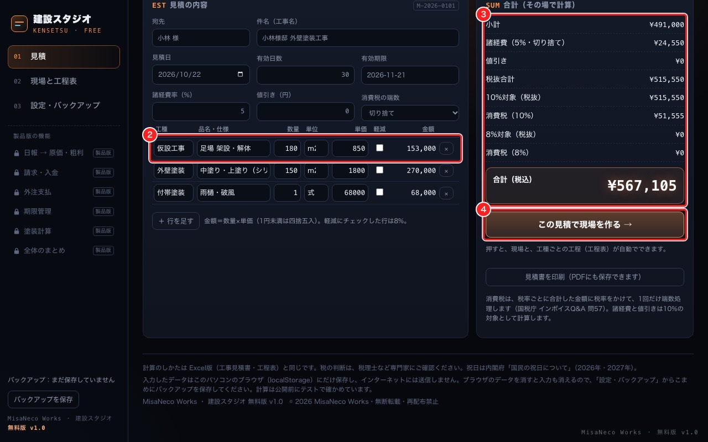
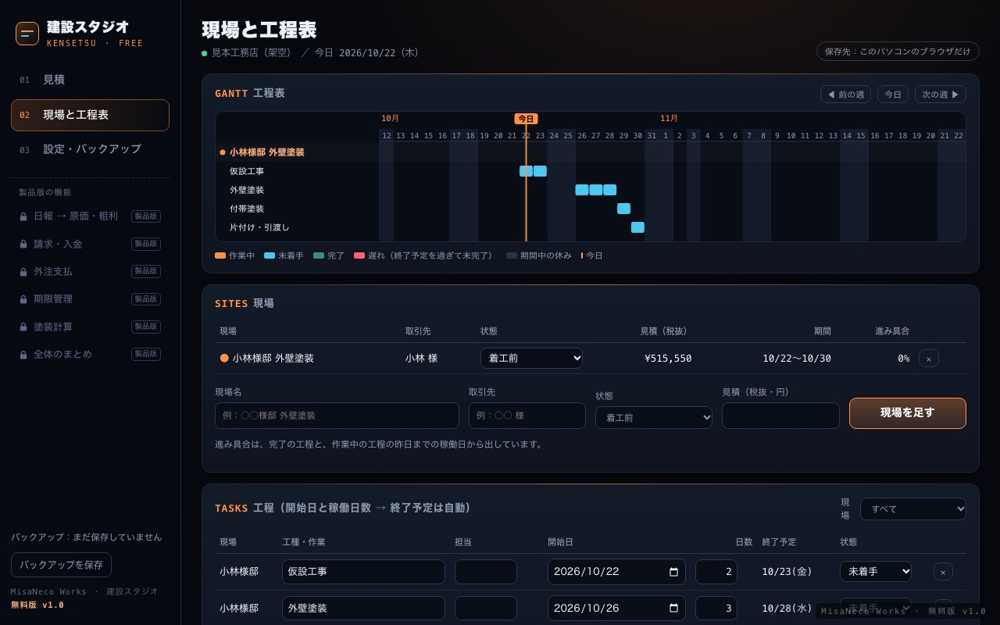
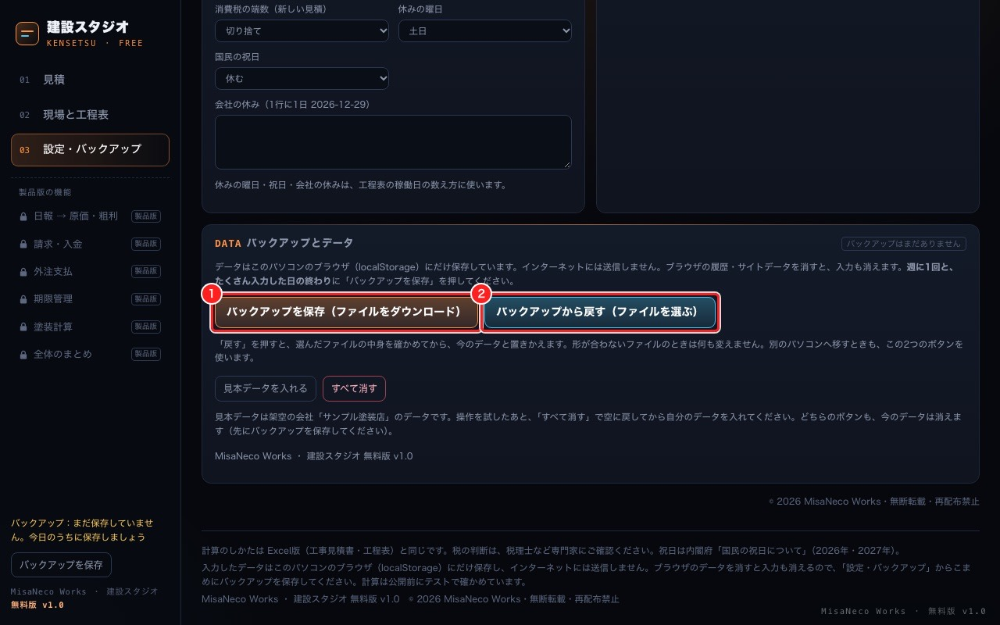

MisaNeco Works ツール集 ／ 業種別スタジオ ／ 建設スタジオ ／ 無料版
KENSETSU STUDIO · FREE
建設スタジオ 無料版
見積書と工程表を、無料で。
明細を入れると、諸経費・消費税・合計がその場で出ます。「この見積で現場を作る」を押すと、工種ごとの工程表ができます。インターネットは不要。入力したデータは、お使いのパソコンの中だけに保存します。
無料でダウンロード zip・約0.9MBv1.0 ／ 登録・メールアドレスの入力はいりません。
- 無料
- ネット不要
- データは手元のパソコンだけ
- 外部への送信なし

01無料版でできること
- 見積書数量×単価、諸経費、値引き、税率ごとの消費税（10%・8%）。そのまま印刷、PDFにも保存できます。
- 工程表見積から現場と工種ごとの工程を作成。開始日と稼働日数から、土日・祝日・会社の休みを除いて終了予定を出します。
- バックアップデータを1つのファイルに保存して、あとで戻せます。別のパソコンへ移すときも同じ手順です。


02無料版と製品版の違い
| 機能 | 無料版 | 製品版 |
|---|---|---|
| 見積書（計算・印刷） | ○ | ○ |
| 工程表（見積から自動） | ○ | ○ |
| 設定・バックアップ | ○ | ○ |
| 日報 → 原価・粗利 | － | ○ |
| 請求・入金 | － | ○ |
| 外注支払 | － | ○ |
| 期限管理 | － | ○ |
| 塗装計算 | － | ○ |
| 全体のまとめ | － | ○ |
| 価格 | 0円 | ¥9,800 買い切り |
無料版のバックアップは、製品版でそのまま読み込めます。あとから製品版に変えても、入れ直しはいりません。
製品版について →03使い始めるまで
- ダウンロードした zip を展開する（ダブルクリック、Windowsは右クリック→「すべて展開」）
- app フォルダの index.html を Google Chrome で開く
- 「設定」で会社名を入れて、見積を作る
くわしい手順は、zip に入っている「使い方.html」に画面つきでまとめています。
04動作環境とデータ
- パソコン（Mac・Windows）の Google Chrome で使います。
- 動作を確認したのは Mac の Google Chrome だけです。Windows・Edge・Safari では確認していません。
- スマホ・タブレットはおすすめしません。
- 入力したデータは、お使いのパソコンのブラウザの中にだけ保存します。インターネットへの送信はしません。
- ブラウザのデータを消すと入力も消えます。こまめに「バックアップを保存」をしてください。
05ご注意
- 個人でも、仕事でも使えます。ファイルの再配布はできません（同梱の利用規約）。
- 税の判断は、国税庁の案内や税理士などの専門家にご確認ください。
- 画面の会社名・金額は架空の見本です。
ダウンロードの前に、どんな画面か触ってみたいときは Web版の見本（全機能入り・架空のデータ） へ。